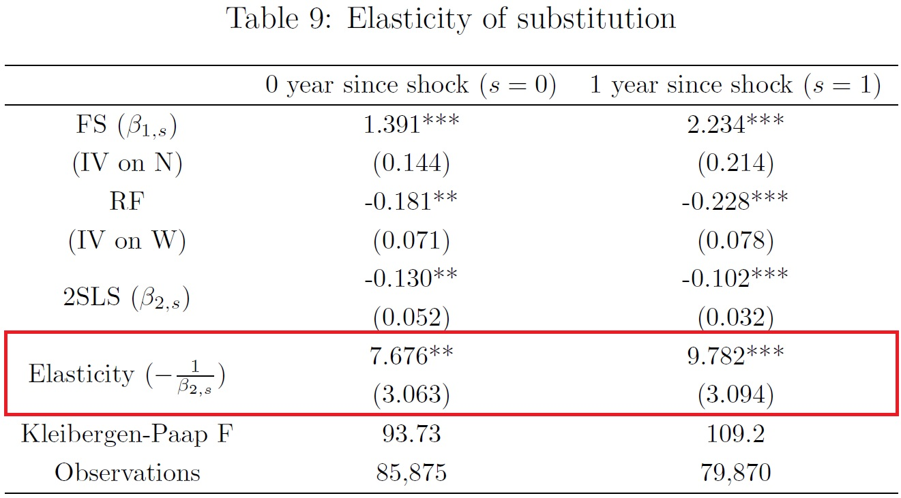

<div id="ajax-page" class="ajax-page-content">
    <div class="ajax-page-wrapper">
        <div class="ajax-page-nav">
            <div class="nav-item ajax-page-prev-next">
                <a class="ajax-page-load" href="portfolio-project-5.html"><i class="lnr lnr-chevron-left"></i></a>
                <a class="ajax-page-load" href="portfolio-project-2.html"><i class="lnr lnr-chevron-right"></i></a>
            </div>
            <div class="nav-item ajax-page-close-button">
                <a id="ajax-page-close-button" href="#"><i class="lnr lnr-cross"></i></a>
            </div>
        </div>

        <div class="ajax-page-title">
            <h1>Substitutability between prime-age and marginal-retirement-age workers (JMP) </h1>
            <a href="./files/JMP_Youngwook Jung.pdf" target="_blank" class="btn btn-primary" style="float: right;">Download JMP</a>
            <!--<a href="./files/JMP_Youngwook Jung.pdf" target="_blank" class="btn btn-primary">Download JMP</a> -->            

        </div>

        <div class="row justify-content-center">
            <div class="col-sm-8 col-md-8 portfolio-block"> <!-- <div class="col-sm-8 col-md-8 portfolio-block"> -->
                <div class="owl-carousel portfolio-page-carousel">
                    <div class="item">
                        
                    </div>
                    <div class="item">
                        
                    </div>
                    <div class="item">
                        
                    </div>
                     <div class="item">
                        
                    </div>
                </div>

                <script type="text/javascript">
                    jQuery(document).ready(function($){
                        $('.portfolio-page-carousel').imagesLoaded(function(){
                            $('.portfolio-page-carousel').owlCarousel({
                                smartSpeed:1200,
                                items: 1,
                                loop: true,
                                dots: true,
                                nav: true,
                                navText: false,
                                margin: 10,
                                autoHeight:true
                            });
                        });
                    });
                </script> 
            </div>

            <div class="col-sm-12 col-md-12 portfolio-block"> 
                <!-- Project Description -->
                <div class="project-description">
                    <div class="block-title">
                        <h3>Summary</h3>
                    </div>

                    <p class="text-justify"> This study examines the substitutability between prime-age (ages 25-54) and marginal-retirement-age (ages 55-64) workers by investigating the impact of internal migration of prime-age workers across 320 U.S. Metropolitan Statistical Areas from 2002 to 2019. </p>

                    <p> To mitigate potential biases from reverse causation, this study utilizes a shift-share instrumental variable approach for identifying the inflow shocks. Furthermore, I use the local projection method, which helps reduce the effects of unobservable endogenous variables and traces the dynamic response of relative employment and earnings between prime- and marginal-retirement-age workers. </p>

                    <p> A 1% increase in prime-age worker inflows boosts the relative employment of prime- to marginal-retirement-age workers by 1.39%. The inflow shock reduces relative earnings by 0.18%, indicating the elasticity of substitution of 7.7. </p>

                    <p> Interpreted via an overlapping generations model, the inflow of prime-age workers, coupled with low substitutability enhances the welfare of workers nearing retirement. Therefore, I emphasize that policymakers should consider not just relocating people to high-inflow areas but also reducing worker substitutability to improve the welfare of the marginal-retirement-age population. </p>

                    <div class="tags-block">
                        <div class="block-title">
                            <h3>Keywords</h3>
                        </div>
                        <ul class="tags">
                            <li><a>Young-Old elasticity of substitution</a></li>
                            <li><a>Internal migration</a></li>
                        </ul>
                    </div>

                    <div class="block-title">
                        <h3>JEL</h3>
                    </div>
                    <p class="text-justify"> C26, E24, J21, R23 </p>

                    <div class="block-title">
                        <h3>Presentations</h3>
                    </div>
                    <p class="text-justify"> Western Economic Association International (July, 2023), PhD-EVS (September, 2023), Midwest Econometrics Group Conference (October, 2023), Korea-America Economic Association Job Market Conference (November, 2023), North American Meetings of the Regional Science Association International (November, 2023) </p>
                </div>
            </div>
        </div>
    </div>
</div>